北見市中央三輪の平屋に三菱霧ヶ峰GV2825を新規設置｜専用回路増設＋屋根付き架台
エアコン専用コンセントのない戸建て平屋へのエアコン取付工事事例。分電盤からの専用回路増設と三菱霧ヶ峰GV2825（10畳用）の新規設置を同時に施工し、屋根付き据置金具と室外化粧カバーで雪・つらら・外観への配慮も両立しました。
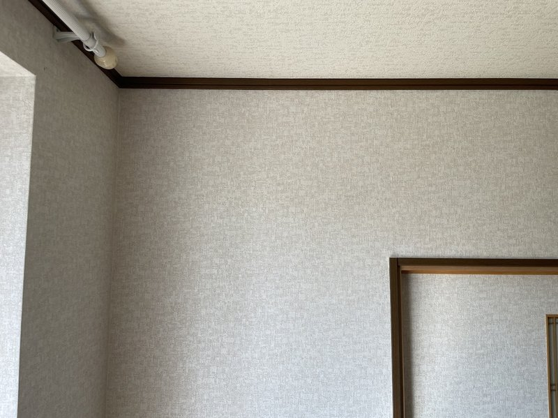
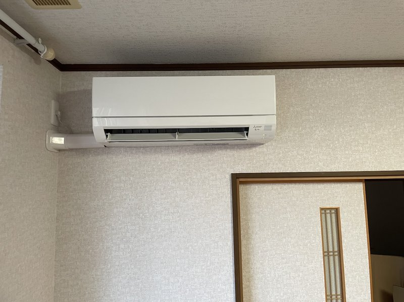
施工概要
| 施工日 | 2025年7月 |
|---|---|
| 地域 | 北海道北見市中央三輪 |
| 建物 | 戸建て（平屋） |
| 工事内容 | エアコン新規設置 + 専用回路（コンセント）増設 |
| 機種 | 三菱 霧ヶ峰 GV2825（10畳用 / 2.8kW） |
| 追加工事 | 分電盤からの専用回路増設、屋根付き据置金具、室外化粧カバー |
お客様のご要望
「平屋の戸建てにエアコンを新しく設置したい。ただ、エアコン専用のコンセントがないので、コンセント増設もまとめてお願いしたい。室外機は冬の雪やつららで壊れないようにしてほしい。配管はできるだけ目立たないように仕上げてほしい。」
施工のポイント
分電盤から専用回路を新設（電気工事士が施工）
エアコンには専用の電源回路（コンセント）が必須です。今回は分電盤に空きブレーカーを増設し、2.0mmのVVFケーブルで専用回路を新設。第二種電気工事士の有資格者が施工しているので、感電・発熱・ブレーカー落ちのリスクを抑えた安全な配線になっています。
三菱霧ヶ峰GV2825（10畳用）の安心スペック
設置機種は三菱「霧ヶ峰」GV2825シリーズ。寒冷地での暖房力と省エネ性能のバランスが良く、北見市の冬でも安心して使えるモデルです。10畳用なので、リビング・寝室の両方に適応します。
屋根付き据置金具で雪・つらら対策
北見市は冬の積雪・つららで室外機が損傷するリスクがあります。今回は屋根付きの据置金具を採用し、室外機本体の上部を物理的に保護。雪の落下や凍結による故障を未然に防ぐ仕様にしました。
室外化粧カバーで配管を美しく
露出した配管テープ巻きの仕上げではなく、室外化粧カバー（スリムダクト）を採用。配管の劣化を防ぎつつ、外観もすっきり整いました。長期使用でも見た目が変わりにくく、戸建ての外壁にも調和します。
追加料金なしの事前見積
本体価格・標準工事・専用回路増設・屋根付き架台・室外化粧カバーまで、現地調査時にすべての費用を事前にご提示。追加料金が後から発生する不安なく工事を進めていただける流れにしています。
施工の様子
ビフォー・アフター（外壁・室外機）
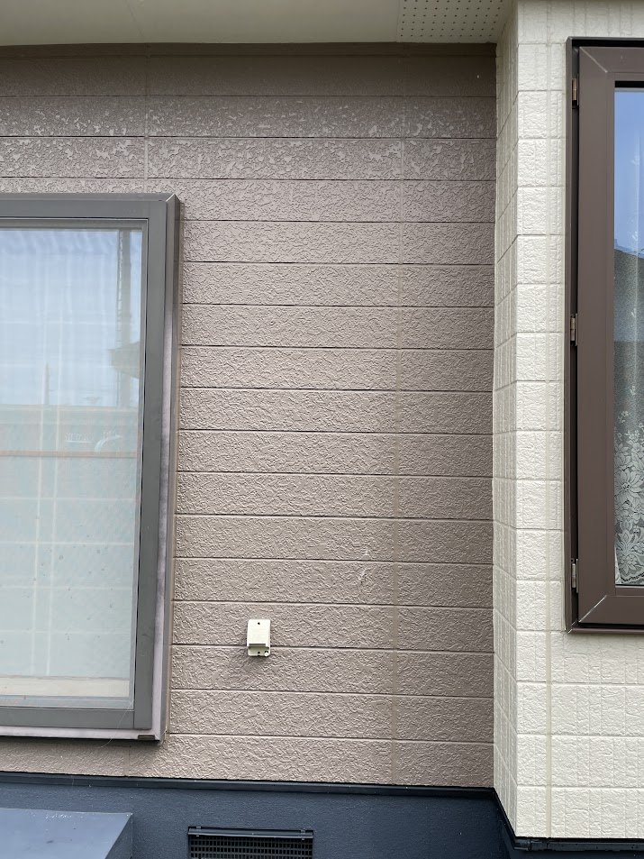
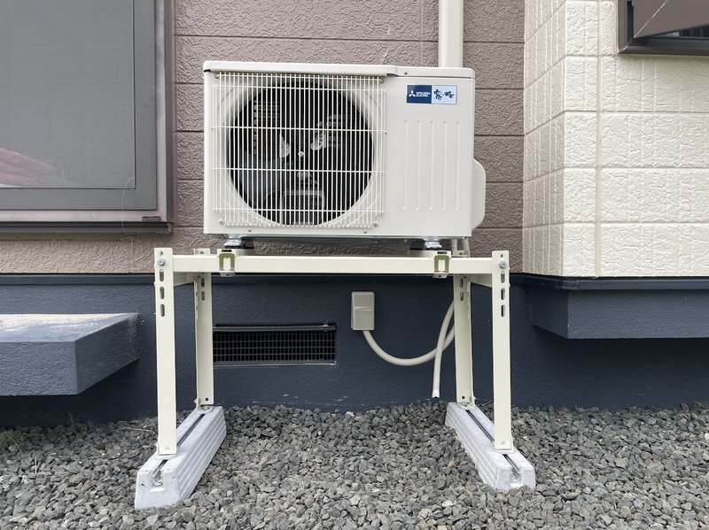
施工工程（時系列）
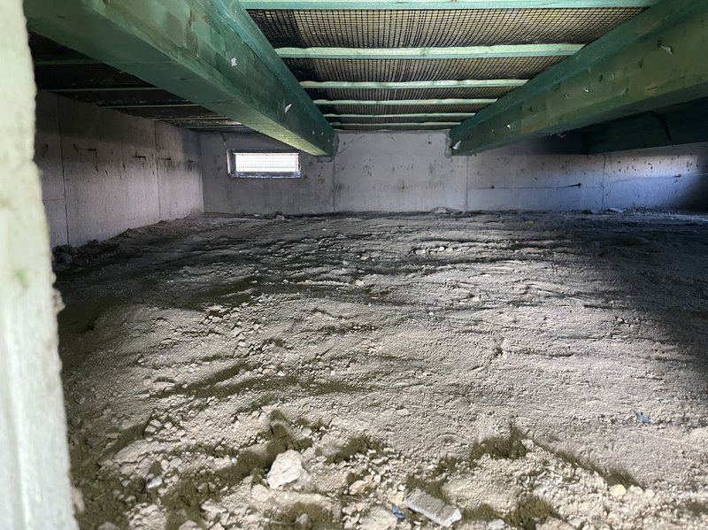
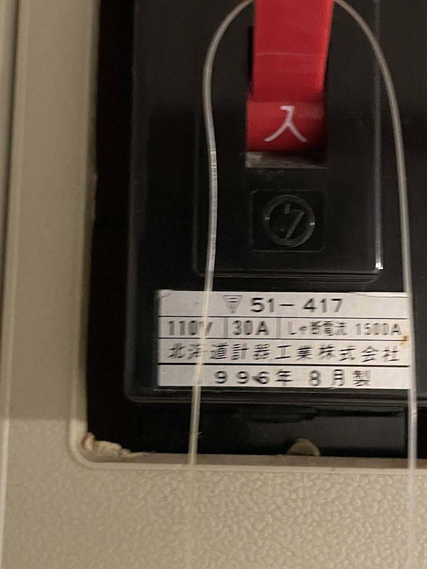
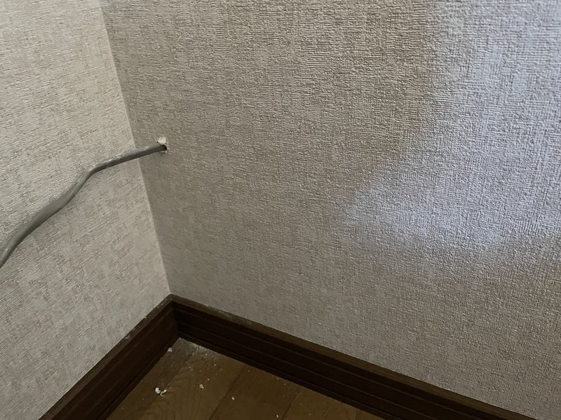
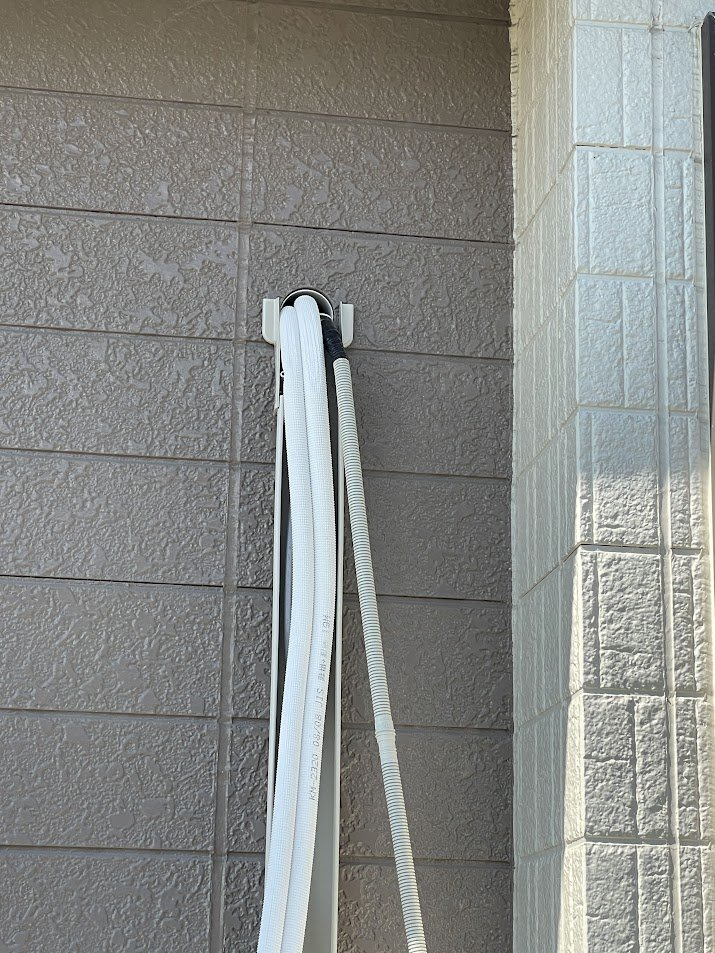
完成写真（各部の仕上がり）
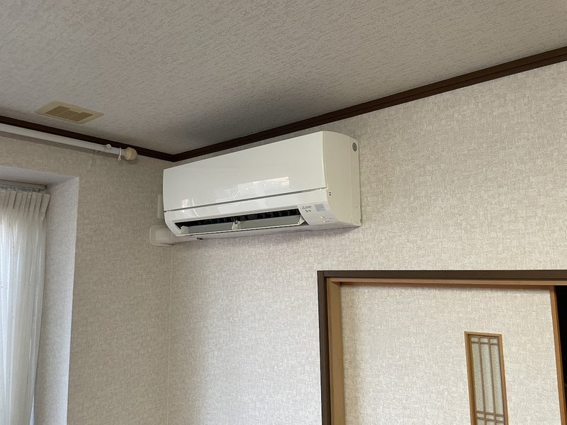
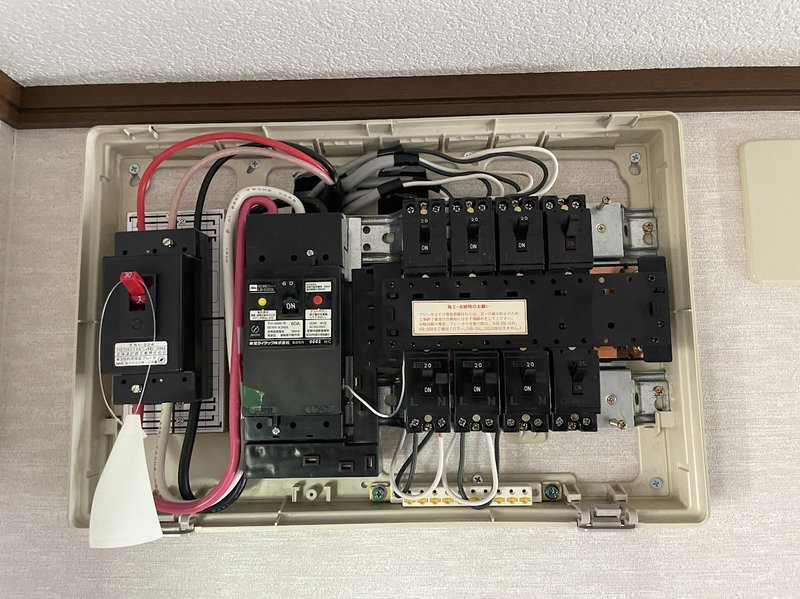
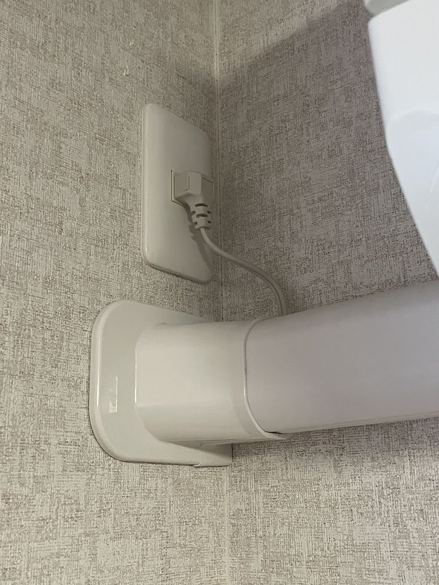
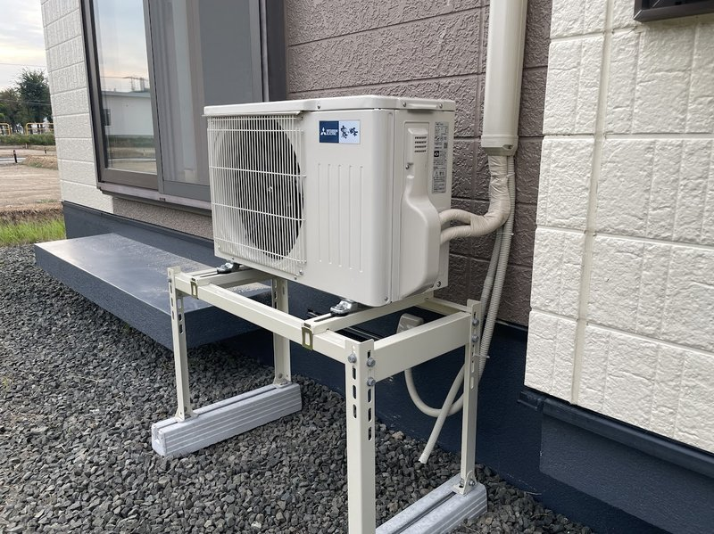
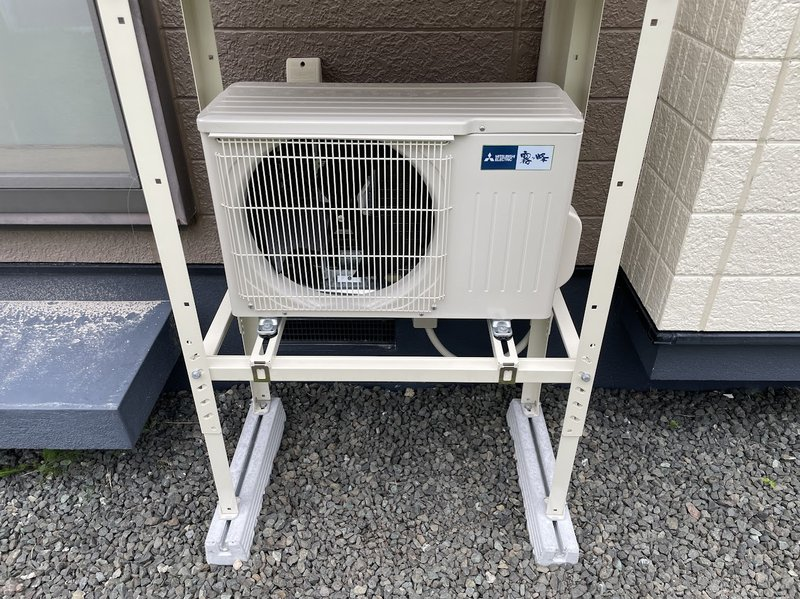
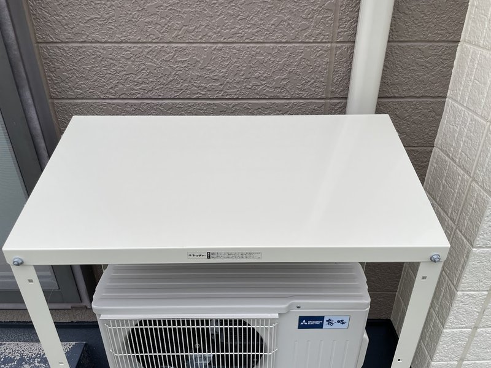
担当者より
今回のお客様のご要望は、配管を見えないように仕上げる隠蔽配線でした。平屋でしたので、まずは天井裏で配線ルートが確保できるかを確認するため、浴室の天井裏（一般的に点検口がある場所）から屋根裏に登ろうとしました。しかし浴室の天井裏は四方すべてボードで囲まれており、ここから登る経路がありません。他の場所からも上がれる場所が見当たらず、天井裏ルートは断念しました。
そこで、化粧モールでの露出配線にするか、床下を回す隠蔽配線にするかを検討し、仕上がりの美しさを優先して床下経由の隠蔽配線を選びました。分電盤が脱衣所ではなく玄関ホールに付いていたため、床下まで落とすには内壁の中を通す必要があります。分電盤の真下にはスイッチ、さらにその下にコンセントがあったので、そのスイッチとコンセントのプレートを外して、壁の中をなんとか通り抜けるルートを確保しました。最後に床下までケーブルを落とすため、壁にドリル穴をひとつだけ開けて床下に貫通させ、その穴は目隠しプレートで隠して仕上げています。化粧モールで露出するよりも壁内に隠蔽できた分、きれいに仕上がったと思います。今回の現場で一番苦戦した、しかし手応えのあった工程でした。
当日は40℃近い猛暑日。お客様から何度も冷たいお茶を差し入れていただき、本当に助かりました。この場を借りて改めて御礼申し上げます。
お客様アンケート
施工後にお客様からいただいたアンケート用紙です（掲載許諾済み・お名前等の個人情報は伏せています）。手書きコメントは原文のまま掲載しています。
工事について
- 工事の丁寧さ
- 4 / 5
- 工事時間
- 3 / 5
- 仕上がり
- 4 / 5
スタッフ対応について
- 挨拶・マナー
- 4 / 5
- 説明の分かりやすさ
- 3 / 5
その他のサービス
- 事前連絡・調整
- 4 / 5
- 清潔感・片付け
- 4 / 5
総合評価
- 全体的な満足度
- 4 / 5
- 友人・知人におすすめ
- はい
おすすめする理由
問いあわせに対し、じんそくに丁寧に対応していただいた エアコン以外についてもしんみに相談にのってくれた
改善してほしい点
エアコンの設置位置について室内の空気の流れなどプロの目から見てもうすこしご提案などいただけたらなおよかったです
※ いただいた改善のご意見は次の施工に反映しています。
その他ご感想・ご要望
アミ戸の件、ブースターの件もご対応下さりありがとうございます
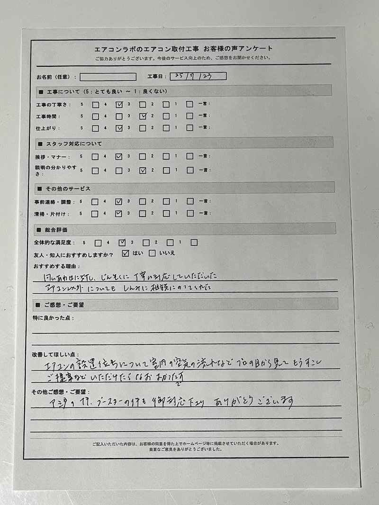
この施工事例についてよくある質問
戸建て平屋に新規エアコンを取り付ける場合、何か特別な工事は必要ですか？
エアコン専用のコンセント（専用回路）がない場合は、分電盤からの専用回路増設工事が必要です。本事例では分電盤に空きブレーカーを増設し、2.0mmのVVFケーブルで専用回路を新設しました。第二種電気工事士の有資格者が施工しています。
北見市の冬の積雪・つららで室外機が壊れないか心配です。
屋根付き据置金具をご利用いただくと室外機本体の上部を物理的に保護でき、雪の落下や凍結による故障リスクを大幅に下げられます。北見市の戸建てでは推奨の仕様です。
配管を目立たないように仕上げてもらえますか？
室外化粧カバー（スリムダクト）の使用や、壁内・床下経由の隠蔽配線で対応できます。本事例では分電盤の真下のスイッチ・コンセントプレートを外して内壁を通し、床下に貫通させた穴を目隠しプレートで仕上げる隠蔽配線を実施しました。
工期はどれくらいですか？
標準的な新規エアコン取付（専用回路増設込み）の場合、1日で完了するケースがほとんどです。現場の状況により隠蔽配線等の追加工程が入ると半日〜1日延びることもあります。事前の現地調査時に正確にお伝えします。
費用は事前にわかりますか？追加料金は発生しますか？
現地調査時に本体価格・標準工事・専用回路増設・追加金具などをすべて含めた総額をご提示します。原則として、ご提示後の追加料金は発生しません。
他のエリアの施工事例
北見市・網走市でのその他のエアコン取付・設置事例もご覧いただけます。
施工事例一覧をすべて見る

{kind=link}
{kind=link}
{kind=link}
{kind=link}
{kind=link}
{kind=link}
{kind=link}
{kind=link}
{kind=link}
{kind=link}
{kind=link}
{kind=link}
{kind=link}
{kind=link}
{kind=link}
北見市でエアコン取付・工事をご検討中ですか？
お見積り無料。専用回路増設・分電盤交換・屋根付き架台など、複合工事も多数実績あり。
北見市全域（中央三輪・端野・常呂・留辺蘂・相内・東相内含む）に出張費無料でお伺いします。
受付時間: 9:00〜19:00（年中無休）